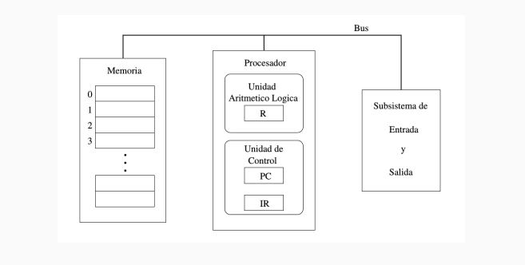
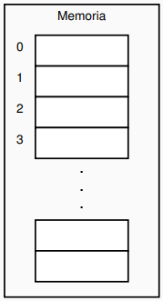

- Introducción
- ¿Qué es un computador?
- Máquina de proceso universal
- Nos permite resolver problemas distintos...
- Simplemente mediante la modificación del set de intrucciones utilizados
- El computador como máquina universal
Como máquina universal, la descripción clásica de un computador sigue el modelo
propuesto por Von Neumann en 1940:

- Arquitectura de von Neumann
Almacenar en memoria datos e intrucciones o
sea, los programas.
- Subsistema de Memoria
- Almacenamiento temporal para datos y programas durante la ejecución.
- Compuesta por celdas (8 bits), identificadas por una dirección única.
- Las celdas se agrupan en palabras, que pueden ser de 8, 16, 32 ó 64
bits.
- Dos operaciones básicas: guardar y recuperar, ejecutadas en forma directa (memoria de acceso aleatorio)
- Solo almacena números (representados en binario); informacion e
intrucciones deben codificarse en binario.

- Sistemas de Numeración
Un sistema de numeración es simplemente el conjunto que nos permite construir números
en base a:
- Un conjunto de símbolos.
- Un conjunto de reglas.
En particular, nos interesan los sistemas Posicionales, aquellos en que el
valor de un numero depende del dígito ocupado y su posición.
- Decimal
El sistema decimal es el mas conocido:
- Dígitos: {0,1,2,3,4,5,6,7,8,9}
- Si se acaban, se agrega una columna a la izquierda
Ejemplos:
1. 21, 12.230.836.253
- Romano
Bien conocido, pero con reglas mas complejas:
- Dígitos: I, V, X, L, C, M.
- Regla: Después de tres iguales, se resta.
Ejemplos
I, II, III, IV, XL, CM
- Sistema de Numeración en computación
- Binario
La electrónica de un computador se hace simple si debemos distinguir entre dos
estados:
- Encendido / Apagado
- +5V / -5V
- 1 / 0
- Conversión Binario - Decimal
Naturalmente, es posible representar números binarios por su equivalente decimal,
por ejemplo:
- Potencias de dos (Ej: 101)
- Conversión Decimal - Binario
Naturalmente, también es posible realizar el proceso inverso (de decimal a binario),
por ejemplo el numero 81:
81/2 = 40 resto 1
40/2 = 20 resto 0
20/2 = 10 resto 0
10/2 = 5 resto
0
5/2 = 2 resto 1
2/2 = 1 resto 0
1/2 = 0 resto 1 - Fin
81 equivale al número 1010001 en binario.